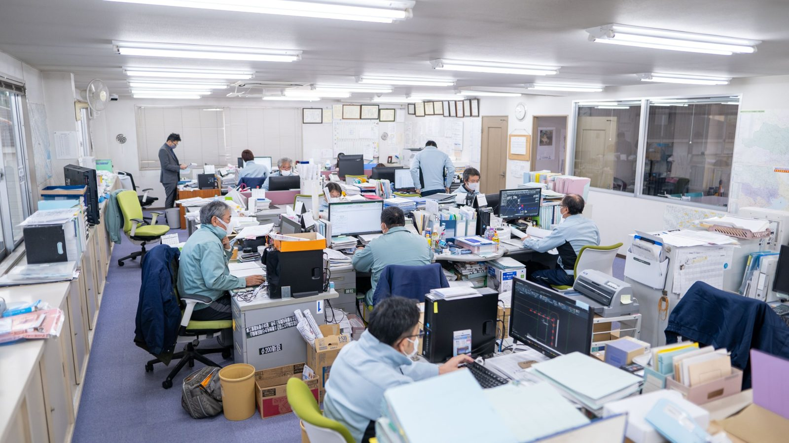

KEEP / CHANGE
この街とともに、50年以上。
信頼をつなぎ、次の時代へ。
現場で道路と水道を守る仕事と、人を大切にする会社づくり。

- 復旧舗装
- 水道
- 一般土木
- 下水道

働き方と、人を育てる仕組み
CHANGE 変えてきたこと
守るために、
変えるという選択。
現場の仕事は昔も今も街に欠かせない。だからこそ、続けられる働き方へ見直してきました。
8人 → 10人
同じ仕事を、人を増やして分け合い、一人ひとりの無理を減らす。
36協定
残業のルールを見直し、必要以上に長く残る働き方を減らす。
雨の日も
雨で現場が早く切り上がった日も、日給は全額支給。